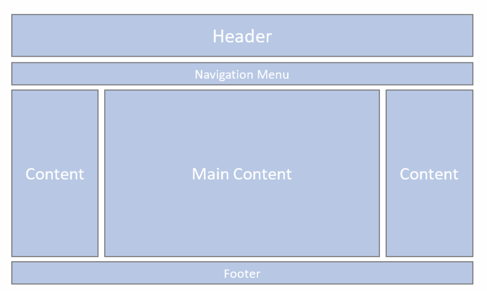

JavaScript – Adding Interactivity
Learn basic programming concepts such as variables, functions, conditions, and events.

Learn basic programming concepts such as variables, functions, conditions, and events.
Experiment with interactive graphics, animations, generative art, and multimedia experiences.